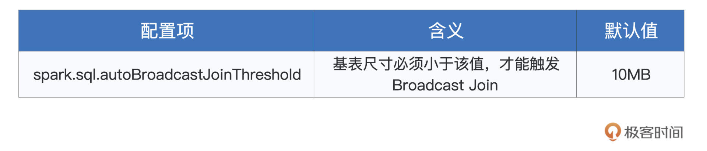
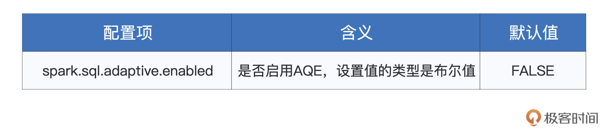
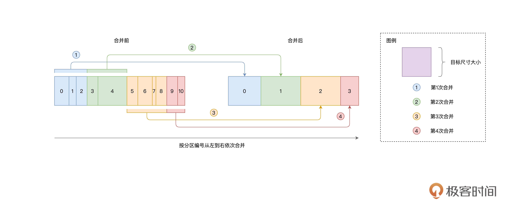
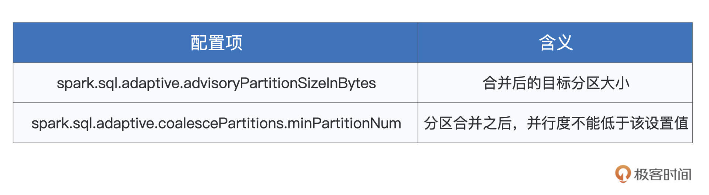
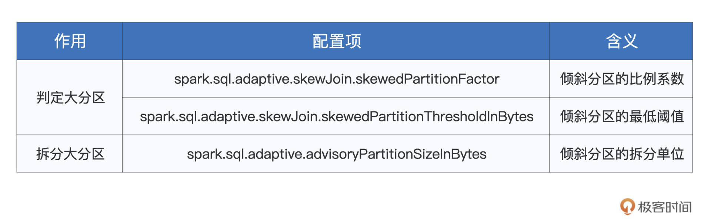
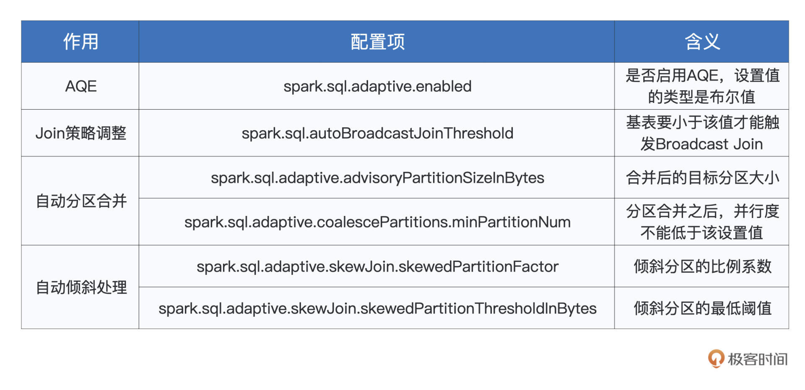

- 00 开篇词 入门Spark，你需要学会“三步走”.md.html
- 01 Spark：从“大数据的Hello World”开始.md.html
- 02 RDD与编程模型：延迟计算是怎么回事？.md.html
- 03 RDD常用算子（一）：RDD内部的数据转换.md.html
- 04 进程模型与分布式部署：分布式计算是怎么回事？.md.html
- 05 调度系统：如何把握分布式计算的精髓？.md.html
- 06 Shuffle管理：为什么Shuffle是性能瓶颈？.md.html
- 07 RDD常用算子（二）：Spark如何实现数据聚合？.md.html
- 08 内存管理：Spark如何使用内存？.md.html
- 09 RDD常用算子（三）：数据的准备、重分布与持久化.md.html
- 10 广播变量 & 累加器：共享变量是用来做什么的？.md.html
- 11 存储系统：数据到底都存哪儿了？.md.html
- 12 基础配置详解：哪些参数会影响应用程序稳定性？.md.html
- 13 Spark SQL：让我们从“小汽车摇号分析”开始.md.html
- 14 台前幕后：DataFrame与Spark SQL的由来.md.html
- 15 数据源与数据格式：DataFrame从何而来？.md.html
- 16 数据转换：如何在DataFrame之上做数据处理？.md.html
- 17 数据关联：不同的关联形式与实现机制该怎么选？.md.html
- 18 数据关联优化：都有哪些Join策略，开发者该如何取舍？.md.html
- 19 配置项详解：哪些参数会影响应用程序执行性能？.md.html
- 20 Hive + Spark强强联合：分布式数仓的不二之选.md.html
- 21 Spark UI（上）：如何高效地定位性能问题？.md.html
- 22 Spark UI（下）：如何高效地定位性能问题？.md.html
- 23 Spark MLlib：从“房价预测”开始.md.html
- 24 特征工程（上）：有哪些常用的特征处理函数？.md.html
- 25 特征工程（下）：有哪些常用的特征处理函数？.md.html
- 26 模型训练（上）：决策树系列算法详解.md.html
- 27 模型训练（中）：回归、分类和聚类算法详解.md.html
- 28 模型训练（下）：协同过滤与频繁项集算法详解.md.html
- 29 Spark MLlib Pipeline：高效开发机器学习应用.md.html
- 30 Structured Streaming：从“流动的Word Count”开始.md.html
- 31 新一代流处理框架：Batch mode和Continuous mode哪家强？.md.html
- 32 Window操作&Watermark：流处理引擎提供了哪些优秀机制？.md.html
- 33 流计算中的数据关联：流与流、流与批.md.html
- 34 Spark + Kafka：流计算中的“万金油”.md.html
- 用户故事 小王：保持空杯心态，不做井底之蛙.md.html
- 结束语 进入时间裂缝，持续学习.md.html
- 捐赠
19 配置项详解：哪些参数会影响应用程序执行性能？
你好，我是吴磊。
在上一讲，我们学习了Broadcast Join这种执行高效的Join策略。要想触发Spark SQL选择这类Join策略，可以利用SQL Functions中的broadcast函数来强制广播基表。在这种情况下，Spark SQL会完全“尊重”开发者的意愿，只要基表小于8GB，它就会竭尽全力地去尝试进行广播并采用Broadcast Join策略。
除了这种比较“强势”的做法，我们还可以用另一种比较温和方式，来把选择权“下放”给Spark SQL，让它自己来决定什么时候选择Broadcast Join，什么时候回退到Shuffle Join。这种温和的方式，就是配置项设置。在第12讲，我们掌握了Spark常规配置项，今天这一讲，咱们来说一说与Spark SQL有关的那些配置项。
不过，打开Spark官网的 Configuration页面，你会发现，这里有上百个配置项，与Spark SQL相关的有好几十个，看得人眼花缭乱、头晕目眩。实际上，绝大多数配置项仅需采用默认值即可，并不需要我们过多关注。因此，我们把目光和注意力聚集到Join策略选择和AQE上。
Join策略的重要性不必多说，AQE（Adaptive Query Execution）是Spark 3.0推出的新特性，它帮助Spark SQL在运行时动态地调整执行计划，更加灵活地优化作业的执行性能。
Broadcast Join
接下来，我们先来说说，如何使用配置项来“温和”地让Spark SQL选择Broadcast Join。对于参与Join的两张表来说，我们把其中尺寸较小的表称作基表。
如果基表的存储尺寸小于广播阈值，那么无需开发者显示调用broadcast函数，Spark SQL同样会选择Broadcast Join的策略，在基表之上创建广播变量，来完成两张表的数据关联。
那么问题来了，广播阈值是什么，它是怎么定义的呢？广播阈值实际上就是一个标记存储尺寸的数值，它可以是10MB、也可是1GB，等等。广播阈值由如下配置项设定，只要基表小于该配置项的设定值，Spark SQL就会自动选择Broadcast Join策略。

如上表所示，广播阈值的默认值为10MB。一般来说，在工业级应用中，我们往往把它设置到2GB左右，即可有效触发Broadcast Join。广播阈值有了，要比较它与基表存储尺寸谁大谁小，Spark SQL还要还得事先计算好基表的存储尺寸才行。那问题来了，Spark SQL依据什么来计算这个数值呢？
这个问题要分两种情况讨论：如果基表数据来自文件系统，那么Spark SQL用来与广播阈值对比的基准，就是基表在磁盘中的存储大小。如果基表数据来自DAG计算的中间环节，那么Spark SQL将参考DataFrame执行计划中的统计值，跟广播阈值做对比，如下所示。
val df: DataFrame = _
// 先对分布式数据集加Cache
df.cache.count
// 获取执行计划
val plan = df.queryExecution.logical
// 获取执行计划对于数据集大小的精确预估
val estimated: BigInt = spark
.sessionState
.executePlan(plan)
.optimizedPlan
.stats
.sizeInBytes
讲到这里，你也许会有点不耐烦：“何必这么麻烦，又要设置配置项，又要提前预估基表大小，真是麻烦！还不如用上一讲提到的broadcast函数来得干脆！”
从开发者的角度看来，确实broadcast函数用起来更方便一些。不过，广播阈值加基表预估的方式，除了为开发者提供一条额外的调优途径外，还为Spark SQL的动态优化奠定了基础。
所谓动态优化，自然是相对静态优化来说的。在3.0版本之前，对于执行计划的优化，Spark SQL仰仗的主要是编译时（运行时之前）的统计信息，如数据表在磁盘中的存储大小，等等。
因此，在3.0版本之前，Spark SQL所有的优化机制（如Join策略的选择）都是静态的，它没有办法在运行时动态地调整执行计划，从而顺应数据集在运行时此消彼长的变化。
举例来说，在Spark SQL的逻辑优化阶段，两张大表的尺寸都超过了广播阈值，因此Spark SQL在物理优化阶段，就不得不选择Shuffle Join这种次优的策略。
但实际上，在运行时期间，其中一张表在Filter过后，剩余的数据量远小于广播阈值，完全可以放进广播变量。可惜此时“木已成舟”，静态优化机制没有办法再将Shuffle Join调整为Broadcast Join。
AQE
为了弥补静态优化的缺陷、同时让Spark SQL变得更加智能，Spark社区在3.0版本中推出了AQE机制。
AQE的全称是Adaptive Query Execution，翻译过来是“自适应查询执行”。它包含了3个动态优化特性，分别是Join策略调整、自动分区合并和自动倾斜处理。
或许是Spark社区对于新的优化机制偏向于保守，AQE机制默认是未开启的，要想充分利用上述的3个特性，我们得先把spark.sql.adaptive.enabled修改为true才行。

好啦，成功开启了AQE机制之后，接下来，我们就结合相关的配置项，来聊一聊这些特性都解决了哪些问题，以及它们是如何工作的。
Join策略调整
我们先来说说Join策略调整，如果用一句话来概括，Join策略调整指的就是Spark SQL在运行时动态地将原本的Shuffle Join策略，调整为执行更加高效的Broadcast Join。
具体来说，每当DAG中的Map阶段执行完毕，Spark SQL就会结合Shuffle中间文件的统计信息，重新计算Reduce阶段数据表的存储大小。如果发现基表尺寸小于广播阈值，那么Spark SQL就把下一阶段的Shuffle Join调整为Broadcast Join。
不难发现，这里的关键是Shuffle，以及Shuffle的中间文件。事实上，不光是Join策略调整这个特性，整个AQE机制的运行，都依赖于DAG中的Shuffle环节。
所谓巧妇难为无米之炊，要做到动态优化，Spark SQL必须要仰仗运行时的执行状态，而Shuffle中间文件，则是这些状态的唯一来源。
举例来说，通过Shuffle中间文件，Spark SQL可以获得诸如文件尺寸、Map Task数据分片大小、Reduce Task分片大小、空文件占比之类的统计信息。正是利用这些统计信息，Spark SQL才能在作业执行的过程中，动态地调整执行计划。
我们结合例子进一步来理解，以Join策略调整为例，给定如下查询语句，假设salaries表和employees表的存储大小都超过了广播阈值，在这种情况下，对于两张表的关联计算，Spark SQL只能选择Shuffle Join策略。
不过实际上，employees按照年龄过滤之后，剩余的数据量是小于广播阈值的。这个时候，得益于AQE机制的Join策略调整，Spark SQL能够把最初制定的Shuffle Join策略，调整为Broadcast Join策略，从而在运行时加速执行性能。
select * from salaries inner join employees
on salaries.id = employees.id
where employees.age >= 30 and employees.age < 45
你看，在这种情况下，广播阈值的设置、以及基表过滤之后数据量的预估，就变得非常重要。原因在于，这两个要素决定了Spark SQL能否成功地在运行时充分利用AQE的Join策略调整特性，进而在整体上优化执行性能。因此，我们必须要掌握广播阈值的设置方法，以及数据集尺寸预估的方法。
介绍完Join策略调整，接下来，我们再来说说AQE机制的另外两个特性：自动分区合并与自动倾斜处理，它们都是对于Shuffle本身的优化策略。
我们先来说说，自动分区合并与自动倾斜处理都在尝试解决什么问题。我们知道，Shuffle的计算过程分为两个阶段：Map阶段和Reduce阶段。Map阶段的数据分布，往往由分布式文件系统中的源数据决定，因此数据集在这个阶段的分布，是相对均匀的。
Reduce阶段的数据分布则不同，它是由Distribution Key和Reduce阶段并行度决定的。并行度也就是分区数目，这个概念咱们在之前的几讲反复强调，想必你并不陌生。
而Distribution Key则定义了Shuffle分发数据的依据，对于reduceByKey算子来说，Distribution Key就是Paired RDD的Key；而对于repartition算子来说，Distribution Key就是传递给repartition算子的形参，如repartition($“Column Name”)。
在业务上，Distribution Key往往是user_id、item_id这一类容易产生倾斜的字段，相应地，数据集在Reduce阶段的分布往往也是不均衡的。
数据的不均衡往往体现在两个方面，一方面是一部分数据分区的体量过小，而另一方面，则是少数分区的体量极其庞大。AQE机制的自动分区合并与自动倾斜处理，正是用来应对数据不均衡的这两个方面。
自动分区合并
了解了自动分区合并的用武之地，接下来，我们来说说，Spark SQL具体如何做到把Reduce阶段过小的分区合并到一起。要弄清楚分区合并的工作原理，我们首先得搞明白：“分区合并从哪里开始？又到哪里结束呢？”
具体来说，Spark SQL怎么判断一个数据分区是不是足够小、它到底需不需要被合并？再者，既然是对多个分区做合并，那么自然就存在一个收敛条件。原因很简单，如果一直不停地合并下去，那么整个数据集就被捏合成了一个超级大的分区，并行度也会下降至1，显然，这不是我们想要的结果。

事实上，Spark SQL采用了一种相对朴素的方法，来实现分区合并。具体来说，Spark SQL事先并不去判断哪些分区是不是足够小，而是按照分区的编号依次进行扫描，当扫描过的数据体量超过了“目标尺寸”时，就进行一次合并。而这个目标尺寸，由以下两个配置项来决定。

其中，开发者可以通过第一个配置项spark.sql.adaptive.advisoryPartitionSizeInBytes来直接指定目标尺寸。第二个参数用于限制Reduce阶段在合并之后的并行度，避免因为合并导致并行度过低，造成CPU资源利用不充分。
结合数据集大小与最低并行度，我们可以反推出来每个分区的平均大小，假设我们把这个平均大小记作是#partitionSize。那么，实际的目标尺寸，取advisoryPartitionSizeInBytes设定值与#partitionSize之间较小的那个数值。
确定了目标尺寸之后，Spark SQL就会依序扫描数据分区，当相邻分区的尺寸之和大于目标尺寸的时候，Spark SQL就把扫描过的分区做一次合并。然后，继续使用这种方式，依次合并剩余的分区，直到所有分区都处理完毕。
自动倾斜处理
没有对比就没有鉴别，分析完自动分区合并如何搞定数据分区过小、过于分散的问题之后，接下来，我们再来说一说，自动倾斜处理如何应对那些倾斜严重的大分区。
经过上面的分析，我们不难发现，自动分区合并实际上包含两个关键环节，一个是确定合并的目标尺寸，一个是依次扫描合并。与之相对应，自动倾斜处理也分为两步，第一步是检测并判定体量较大的倾斜分区，第二步是把这些大分区拆分为小分区。要做到这两步，Spark SQL需要依赖如下3个配置项。

其中，前两个配置项用于判定倾斜分区，第3个配置项advisoryPartitionSizeInBytes我们刚刚学过，这个参数除了用于合并小分区外，同时还用于拆分倾斜分区，可以说是“一菜两吃”。
下面我们重点来讲一讲，Spark SQL如何利用前两个参数来判定大分区的过程。
首先，Spark SQL对所有数据分区按照存储大小做排序，取中位数作为基数。然后，将中位数乘以skewedPartitionFactor指定的比例系数，得到判定阈值。凡是存储尺寸大于判定阈值的数据分区，都有可能被判定为倾斜分区。
为什么说“有可能”，而不是“一定”呢？原因是，倾斜分区的判定，还要受到skewedPartitionThresholdInBytes参数的限制，它是判定倾斜分区的最低阈值。也就是说，只有那些尺寸大于skewedPartitionThresholdInBytes设定值的“候选分区”，才会最终判定为倾斜分区。
为了更好地理解这个判定的过程，我们来举个例子。假设数据表salaries有3个分区，大小分别是90MB、100MB和512MB。显然，这3个分区的中位数是100MB，那么拿它乘以比例系数skewedPartitionFactor（默认值为5），得到判定阈值为100MB * 5 = 500MB。因此，在咱们的例子中，只有最后一个尺寸为512MB的数据分区会被列为“候选分区”。
接下来，Spark SQL还要拿512MB与skewedPartitionThresholdInBytes作对比，这个参数的默认值是256MB。
显然，512MB比256MB要大得多，这个时候，Spark SQL才会最终把最后一个分区，判定为倾斜分区。相反，假设我们把skewedPartitionThresholdInBytes这个参数调大，设置为1GB，那么最后一个分区就不满足最低阈值，因此也就不会被判定为倾斜分区。
倾斜分区判定完毕之后，下一步，就是根据advisoryPartitionSizeInBytes参数指定的目标尺寸，对大分区进行拆分。假设我们把这个参数的值设置为256MB，那么刚刚512MB的大分区就会被拆成两个小分区（512MB / 2 = 256MB）。拆分之后，salaries表就由3个分区变成了4个分区，每个数据分区的尺寸，都不超过256MB。
重点回顾
好啦，到此为止，与Spark SQL相关的重要配置项，我们就讲到这里。今天的内容很多，我们一起来总结一下。
首先，我们介绍了广播阈值这一概念，它的作用在于，当基表尺寸小于广播阈值时，Spark SQL将自动选择Broadcast Join策略来完成关联计算。
然后，我们分别介绍了AQE（Adaptive Query Execution）机制的3个特性，分别是Join策略调整、自动分区合并、以及自动倾斜处理。与Spark SQL的静态优化机制不同，AQE结合Shuffle中间文件提供的统计信息，在运行时动态地调整执行计划，从而达到优化作业执行性能的目的。
所谓Join策略调整，它指的是，结合过滤之后的基表尺寸与广播阈值，Spark SQL在运行时动态地将原本的Shuffle Join策略，调整为Broadcast Join策略的过程。基表尺寸的预估，可以使用如下方法来获得。
val df: DataFrame = _
// 先对分布式数据集加Cache
df.cache.count
// 获取执行计划
val plan = df.queryExecution.logical
// 获取执行计划对于数据集大小的精确预估
val estimated: BigInt = spark
.sessionState
.executePlan(plan)
.optimizedPlan
.stats
.sizeInBytes
自动分区合并与自动倾斜处理，实际上都是用来解决Shuffle过后，数据分布不均匀的问题。自动分区合并的作用，在于合并过小的数据分区，从而避免Task粒度过细、任务调度开销过高的问题。与之相对，自动倾斜处理，它的用途在于拆分过大的数据分区，从而避免个别Task负载过高而拖累整个作业的执行性能。
不论是广播阈值，还是AQE的诸多特性，我们都可以通过调节相关的配置项，来影响Spark SQL的优化行为。为了方便你回顾、查找这些配置项，我整理了如下表格，供你随时参考。

每课一练
结合AQE必须要依赖Shuffle中间文件这一特点，你能说一说，AQE有什么不尽如人意之处吗？（提示：从Shuffle的两个计算阶段出发，去思考这个问题）
欢迎你在留言区跟我交流讨论，也推荐你把这一讲分享给更多的同事、朋友。
© 2019 - 2023 Liangliang Lee. Powered by gin and hexo-theme-book.